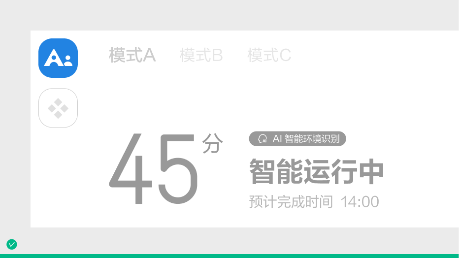
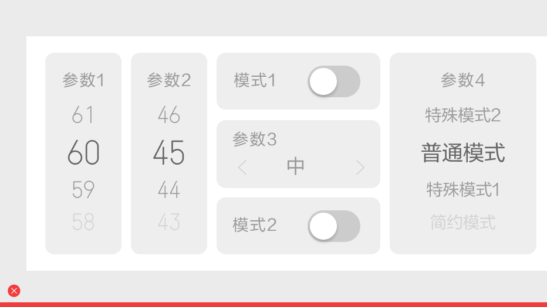
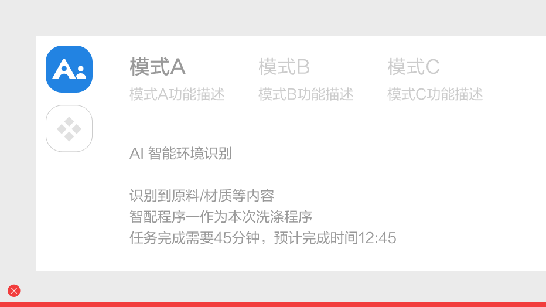
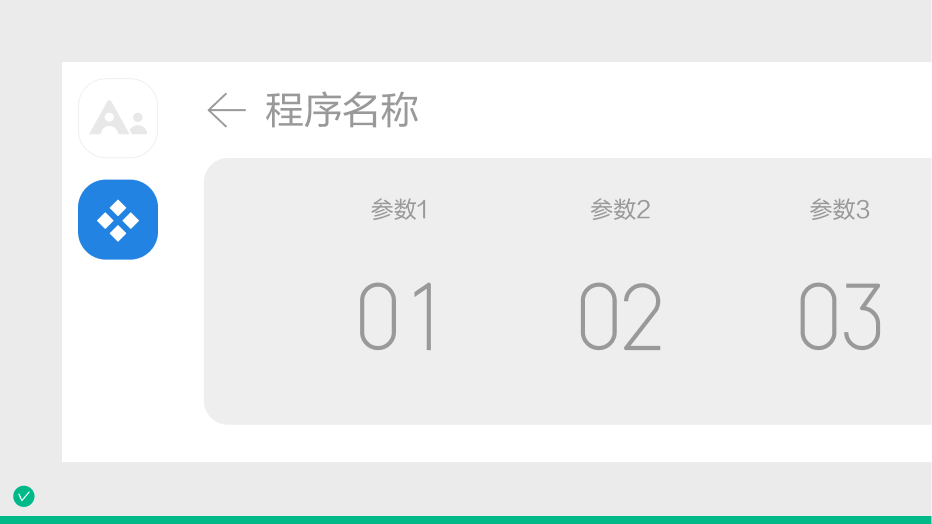
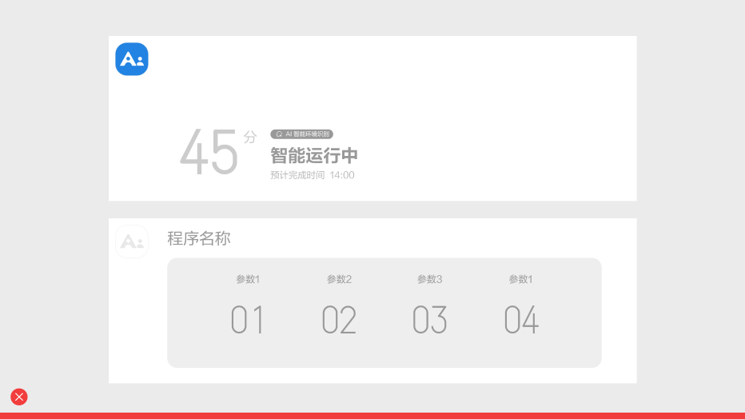
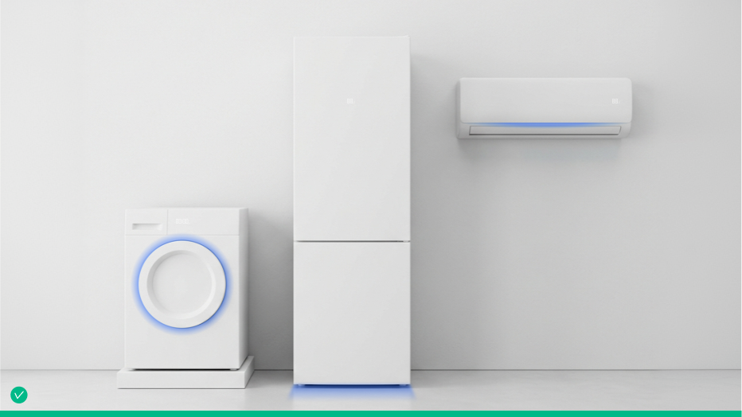
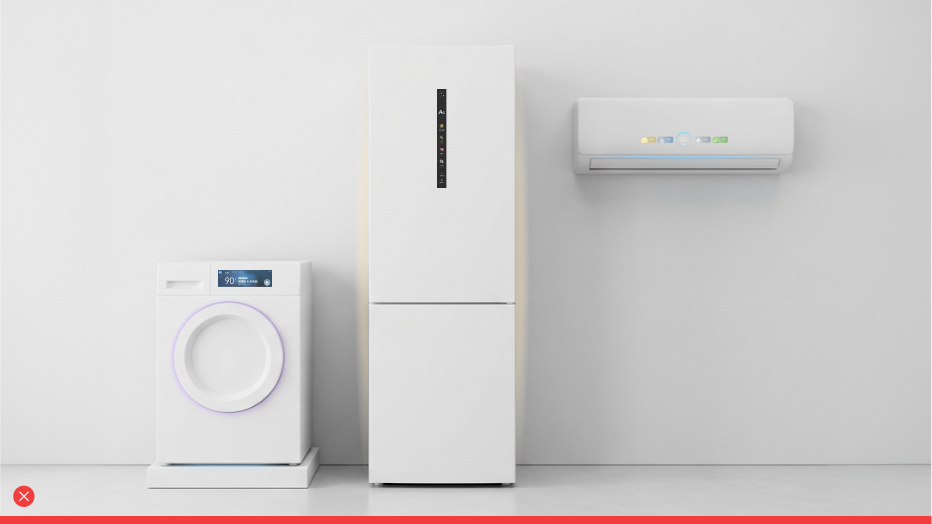
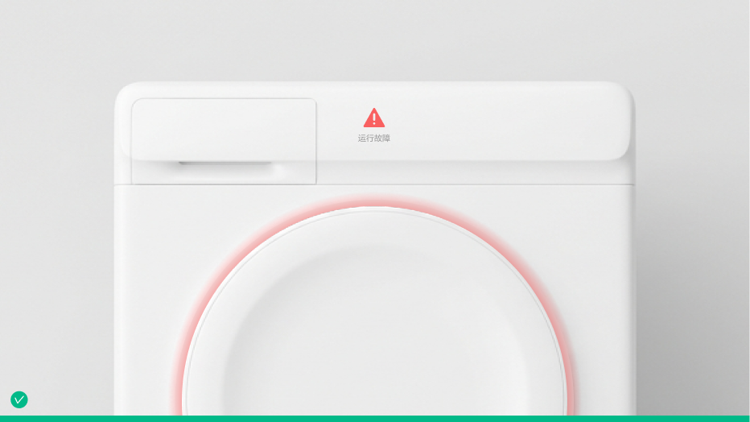
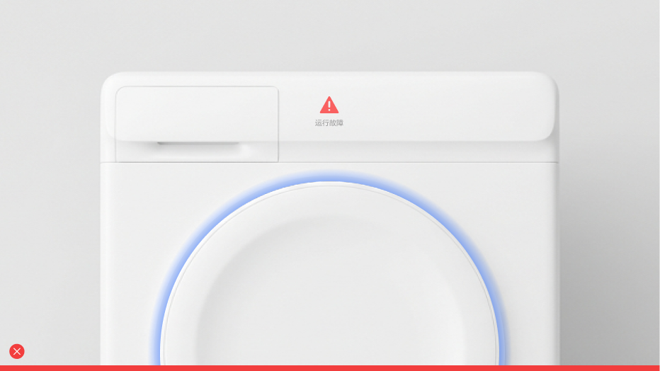

Less is more
秉持“少即是多”的设计哲学，家电的核心价值在于让用户以最低的关注度高效完成任务。优秀的设计应当是隐形的。系统需通过多模态传感器与场景算法精准预测用户意图，将复杂的底层机器运转逻辑封装于极简的交互架构中。用最少的操作步骤与视觉干预，释放最大的服务效能，最大化降低用户的认知与操作成本。


此部分作为 UI 设计争议的最高决策依据，帮助团队在复杂取舍中保持一致判断。
秉持“少即是多”的设计哲学，家电的核心价值在于让用户以最低的关注度高效完成任务。优秀的设计应当是隐形的。系统需通过多模态传感器与场景算法精准预测用户意图，将复杂的底层机器运转逻辑封装于极简的交互架构中。用最少的操作步骤与视觉干预，释放最大的服务效能，最大化降低用户的认知与操作成本。


界面设计应保持视觉焦点的绝对专注。在任何场景下，仅优先呈现与当前任务最关键的数据和核心操作。坚决避免将所有功能平铺堆砌在同一视区，通过清晰的主次划分，有效降低界面的视觉噪音与用户的决策负担。

构建安全的系统探索环境。所有的破坏性或关键性操作均需提供清晰的状态预警与非破坏性的回退机制。通过降低误操作的不可逆成本，消除用户在交互过程中的认知负担与焦虑感。


跨端认知要保持一致，系统图标、语义色彩、操控手势等必须具备唯一且确定的含义。同时全局性的底层视觉基建不可随意篡改，各产业在接入规范时，必须严格调用基础平台下的视觉构建块。


在体验上，用户不应该被困在单一的屏幕玻璃内。界面的视觉内容需要向物理环境延伸，保证硬件如实体灯带、旋钮等以及触觉反馈或系统音效之间的无缝联动，避免多维之间各行其事，割裂用户体验。

